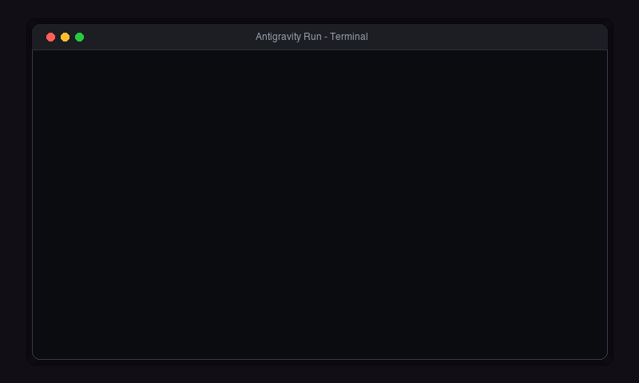

AI / Automation (AI 自动化)
AI 自动化任务编排器 / AI Task Orchestrator
使用 Claude Code 与 Antigravity 协同开发的自动化脚本，帮助我一键整理 AI 社群的每日动态。 A local automation script co-developed with Claude Code & Antigravity to summarize daily AI trends.